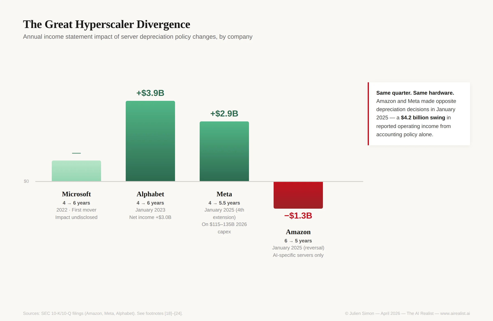

On March 11, 2026, OpenAI quietly retired GPT-5.1 from ChatGPT.[1] The model had been live for four months. Its replacement, GPT-5.4, was already shipping. Between August 2025 and March 2026, OpenAI released five major versions of GPT-5 — from 5.0 through 5.4, roughly one every six weeks — plus their mini and nano variants, each superseding the last.[2] No version of the current product lasted longer than 4 months before being deprecated or demoted to fallback status.
The pre-trained base model underneath all five versions likely cost north of $100 million to produce.[3] The base itself was still generating derivative value. But each post-trained variant — the product the customer actually used — lived and died on a cycle shorter than a single fiscal quarter.
There is no accounting standard designed for this.
The gap nobody is measuring
The AI industry runs on a three-stage training pipeline. Stage one is pre-training: the massive, months-long compute job that produces a foundation model — the raw intelligence. Epoch AI estimates these runs have grown in cost at 2.4× per year since 2016, with the most expensive now exceeding $1 billion.[4] Stage two is post-training: reinforcement learning, alignment tuning, and capability refinement that turns the foundation into a product. Stage three is distillation: compressing the large model’s capabilities into smaller, cheaper variants for high-volume deployment.
The financial structure of this pipeline is what the accounting standards fail to capture. The pre-training run is the nine- or ten-figure expenditure, but it functions as a platform, not a product. OpenAI’s GPT-5 base has generated at least 5 major derivative versions over the past 7 months and counting. Google’s Gemini 2.5 Pro serves as the teacher model from which Gemini Flash and Flash Lite are distilled — a relationship Google’s own technical report confirms.[5] Anthropic’s Opus and Sonnet tiers share a similar architecture, though the company has not publicly disclosed whether Sonnet is distilled from Opus or trained independently at a smaller scale.The pre-training base is the platform; the post-training variants are the products; and the products depreciate at a rate that no GAAP framework was designed to capture.
Under current US GAAP, companies face a classification problem with no clean answer.[6] If a company treats a training run as research and development, the full cost — $200 million, $500 million, whatever the bill — hits the income statement in the quarter it’s incurred. The balance sheet never sees it. If the company instead tries to capitalize the training run as software — spreading the cost over multiple years, the way it would with a conventional software project — the accounting rules create a catch-22: you can only start capitalizing costs after the major technical uncertainties are resolved, but for a frontier model, the uncertainty about whether it will achieve target performance isn’t resolved until training is substantially complete.[7] The FASB tightened this test in September 2025, and for companies selling model access as a service rather than using it internally, an even stricter standard applies—one in which the capitalization trigger is essentially indistinguishable from training completion. As EY flatly noted in December 2025, the guidance “does not provide specific guidance for AI software development.”[8]
The result is a classification vacuum. Most frontier labs expense training costs as R&D, which means the model-layer depreciation problem hits the income statement immediately, arguably a conservative treatment. The larger risk sits one layer down: the hardware purchased to run the training is capitalized as property and equipment and depreciated over five to six years. And the gap between those two treatments — the model that lives three to twelve months, sitting on hardware that depreciates over six years — is where the financial fiction lives. The three-stage pipeline genuinely extends the economic utility of both the model and the hardware. A pre-training base that generates five derivative versions over eighteen months is better capital efficiency than one model, one training run, one product. But the accounting standards don’t reflect the pipeline’s structure: they apply a single useful-life estimate to hardware that serves three distinct workloads with three distinct depreciation curves.
How the pipeline actually works
The shift that enabled the current iteration speed was not primarily algorithmic. It was the transition from human-gated to machine-gated feedback.
The old regime — reinforcement learning from human feedback, or RLHF — required human labelers to rank model outputs, which were then used to train a reward model that guided the RL loop. The human labeling step was the bottleneck. Each post-training iteration required a fresh campaign of thousands of ranked comparisons, took weeks, cost real money in annotator time, and scaled with headcount rather than compute.[9] This is why the gap between GPT-4 and GPT-4o was measured in months, not weeks.
The new regime — reinforcement learning with verifiable rewards (RLVR) — replaces human labelers with automated verifiers. Does the code compile? Do the tests pass? Is the math correct? Did the tool call return the right result? The verification runs at machine speed.[10] No humans in the loop. The iteration cadence is now constrained by compute availability rather than labeler throughput. That is what makes it feasible to have five GPT-5 versions in seven months. With RLHF, each would have required a new annotation campaign. With RLVR, you run more GPU-hours.
The compute profile of this post-training loop matters for the hardware story. Regardless of which specific RL algorithm a lab uses — OpenAI has not disclosed its choice — all RL post-training methods share a structural characteristic: the generation phase consumes the majority of the compute budget.[11] Every iteration of the loop requires the model to generate multiple complete responses to each training prompt, score them, and then compute a gradient update. The generation step is inference. The gradient update is training. In practice, post-training is an inference-dominated workload wearing training’s clothes — the GPUs spend most of their time generating tokens sequentially, bottlenecked by how fast they can read model weights from memory, with the gradient update that actually changes the model’s weights consuming a small fraction of the total compute.[12]
The economic consequence is precise. Pre-training requires the latest and most expensive accelerators — tight GPU synchronization across thousands of chips, maximum interconnect bandwidth, cutting-edge precision formats. There is no substitute for frontier silicon at this stage. But post-training can, in principle, run its generation phase on previous-generation hardware, because the generation phase is inference. An H100 generating RL training samples does not need to be a Blackwell B200. It just needs enough memory bandwidth to run the model forward at a reasonable speed.
The hardware cascade: real today, threatened tomorrow
This is where the training pipeline structure intersects with the hardware depreciation problem that hyperscalers have been managing — or mismanaging — through accounting policy.
The implicit financial model behind extended useful lives is what the industry calls the computing cascade. New GPUs enter service for frontier pre-training. After twelve to eighteen months, the next GPU generation arrives, and the older chips migrate to post-training workloads and inference. After another cycle, they cascade further to batch processing, fine-tuning, and edge deployment. The cascade model is the financial justification for depreciating a GPU over five or six years, even though its frontier training life is eighteen months at best.[13]
The cascade is real. CoreWeave reported in late 2025 that its five-year-old A100 GPUs remained fully booked.[13] A100s that originally sold for $15,000–$25,000 trade on the secondary market at $8,000–$18,000, depending on variant — not zero.[14] The inference workload that absorbs cascaded hardware is genuinely large and growing: by most estimates, inference will consume 80% of AI compute cycles by 2030.[15] For labs running RLVR post-training loops, the generation cluster provides a natural home for last-generation silicon.
But two forces are converging to compress the cascade window.
First, post-training compute is scaling toward parity with pre-training. Epoch AI estimates that OpenAI scaled its RL compute roughly tenfold between o1 and o3, and projects that post-training compute will soon match pre-training budgets.[16] When the RL generation cluster needs as many GPUs as the pre-training cluster, the “old GPUs can handle it” thesis strains. The workload is still inference-dominated, but the scale demands frontier throughput.
Second, purpose-built decode architectures are attacking the GPU’s specific weakness at the silicon level. Cerebras’s WSE-3 uses 44GB of on-chip SRAM to eliminate the high-bandwidth memory (HBM) bottleneck that makes sequential token generation slow on conventional GPUs. Nvidia itself acknowledged the threat by acquiring Groq — the inference chip startup whose LPU architecture targets the same bottleneck — for $20 billion in December 2025 and launching the Groq 3 at GTC 2026.[17] As Cerebras’s CTO noted after watching the keynote: Jensen “essentially acknowledged that GPUs can’t really compete” in the high-value, high-speed inference segment above 400 tokens per second. These architectures are optimized for exactly the workload that the cascade model depends on old GPUs to serve, but the threat extends beyond production inference. Because RLVR post-training is itself inference-dominated, the same silicon that accelerates serving users could accelerate the generation cluster inside the training loop. A lab that runs GRPO-style group generation on purpose-built decode hardware and reserves conventional GPUs solely for gradient updates would need far fewer general-purpose training chips for post-training. The cascade doesn’t just lose its Tier 3 (inference) market; it also loses most of Tier 2 (post-training). Meanwhile, the hyperscalers themselves are investing in custom silicon for their own inference workloads, further reducing their demand for cascaded GPUs without any of that silicon reaching the broader secondary market.
The cascade works today. KKR has offered the strongest version of this argument: temporary overbuilds behave like rolling upgrades rather than stranded assets, because new AI workloads absorb excess capacity and power constraints naturally limit the potential for overbuild.[35] That may prove correct for physical infrastructure broadly — data centers, power systems, network fabric. It does not address the trained model itself, nor the hardware specifically built for AI workloads that Amazon has already begun writing down. The cascade’s financial logic may not survive the next two hardware cycles. And the depreciation schedules that depend on it extend five to six years into the future.
The Great Hyperscaler Divergence
The clearest evidence that the depreciation question is unresolved — not just theoretically but in practice, inside the companies making the largest bets — is that two hyperscalers took opposite actions in the same quarter under identical technological conditions.
In January 2025, Amazon shortened the useful life of a subset of its servers and networking equipment from six years to five years. The company’s SEC filing stated the reason explicitly: “the increased pace of technology development, particularly in the area of artificial intelligence and machine learning.”[18] The nine-month impact through September 2025 was an increase in depreciation expense of $889 million.[19] Amazon also retired some equipment early, taking $920 million in accelerated depreciation charges in Q4 2024.[20] Total operating income impact for 2025: approximately $1.3 billion.
In the same month, Meta extended the estimated useful life of its servers and network assets to 5.5 years — its fourth extension in three years.[21] The expected reduction in 2025 depreciation: approximately $2.9 billion.[22] Meta’s extension history runs from four years (pre-2022) through 4.5 and five years (2022) to the current 5.5 years, each step coinciding precisely with an acceleration in AI capital expenditure.[23]
Same quarter. Same AI hardware cycle. Same underlying technology. Amazon absorbed a $1.3 billion hit to reported income on a subset of its AI-specific servers. Meta gained $2.9 billion across its full server fleet — a figure based on assets in service as of December 31, 2024, with the benefit compounding as Meta deploys $115–135 billion in new capital through 2026.[23] The $4.2 billion swing between these two decisions is not an operational difference — it is a pure accounting choice. Amazon cited AI obsolescence as the reason for the shortening. Meta cited asset durability as the reason for the extension.
The specificity of Amazon’s reversal matters. This was not a blanket reassessment — it targeted a subset of servers, the ones most exposed to the AI hardware upgrade cycle. Amazon had already extended useful lives twice, from four to five years in 2022 and from five to six in 2023, capturing billions in depreciation savings along the way. The reversal is the admission that the earlier extensions were too aggressive for hardware running AI workloads and that the engineering reality caught up with the accounting assumption. The “subset” language also implies that Amazon’s general-purpose servers may still justify longer lives while its AI-specific fleet does not. If auditors accept that distinction, it establishes the precedent that AI hardware and general server hardware require different depreciation schedules, a precedent no other hyperscaler has yet adopted.
Alphabet had already extended from four to six years in January 2023, reducing FY2023 depreciation by $3.9 billion and increasing net income by $3.0 billion.[24] Microsoft was the first mover, extending from four to six years in 2022.

The aggregate annual depreciation reduction across Meta, Alphabet, and Microsoft from their extensions is difficult to calculate precisely because the benefit compounds as new assets enter at the extended life. But the directional impact is unambiguous: billions of dollars in reported operating income each year reflect accounting policy, not economic reality. And Amazon’s reversal — the only hyperscaler to move in the opposite direction — is the market signal that the cascade model is under stress where it matters most: in the infrastructure built specifically for AI workloads.
What the post-training pipeline means for IP
The same post-training capabilities that depreciate in months are also the ones most exposed to extraction by competitors — and the extraction is already happening at an industrial scale.
Pre-training lays the foundation for the model’s general intelligence. It cannot be stolen through an API. No amount of querying will extract the model’s weights, architecture, or training data. The hundred-million-dollar investment in pre-training is protected because the asset is accessible only through the interface the lab chooses to expose.
Post-training is different. The capabilities that RLVR optimizes — chain-of-thought reasoning, tool use, code generation, structured problem-solving — are expressed in the model’s outputs. They are visible to anyone with API access. And they are exactly the capabilities that distillation can extract.
In February 2026, Anthropic accused three Chinese AI labs — DeepSeek, Moonshot AI, and MiniMax — of running coordinated distillation campaigns against Claude. The scale was industrial: over 16 million exchanges through approximately 24,000 fraudulent accounts, using proxy services that operated networks of tens of thousands of accounts simultaneously.[25] The three campaigns targeted Claude’s most commercially valuable capabilities: DeepSeek focused on reasoning and chain-of-thought extraction; Moonshot targeted coding and vision; and MiniMax targeted agentic tool use and orchestration.[26] Google separately reported distillation attacks on Gemini using more than 100,000 prompts. OpenAI made similar accusations to House lawmakers.[27]
The economics of distillation theft map precisely onto the training pipeline’s cost structure. A lab spends months and hundreds of millions on pre-training, which the attacker cannot access. It then spends weeks and millions on post-training, producing the capabilities the customer pays for. The attacker queries the API at inference pricing — cents per response — and harvests exactly the post-training outputs that the RL loop optimized. The cost of stealing is structurally proportional to the cost of inference, not to the cost of training.
Anthropic explicitly drew the connection to export controls: restricting China’s access to advanced chips limits both direct model training and the scale of illicit distillation.[28] The structural argument is that export controls target Stage 1 (pre-training requires massive compute). Distillation attacks bypass Stage 1 entirely by extracting Stages 2 and 3 from American labs at inference cost. Distillation is not the only path to closing the capability gap — independent efficiency gains are real, as DeepSeek V3’s near-frontier performance at a claimed $5.6 million in compute demonstrates. But distillation is faster and cheaper for targeted capability extraction, and it scales with API access rather than with compute budgets.
The domains where RLVR works best — code, math, tool use — are the domains most vulnerable to distillation, because they produce structured, evaluable outputs that are rich training signals. The same property that makes a capability rapidly improvable through automated verification makes it rapidly extractable through scaled API querying. The RLVR revolution, which accelerated Western labs’ iteration speed, simultaneously expanded the attack surface for capability theft.[37]
What the standards miss and why it matters for valuations
The accounting standards were not designed for any of this.
A pre-training base that costs $200 million and serves as the foundation for 12 to 18 months of derivative products lacks a clear classification. If expensed as R&D, it disappears from the balance sheet immediately, thereby understating the asset base and front-loading costs. If capitalized as internal-use software and amortized over the GAAP-standard three to five years, it overstates the asset’s life by two to four times. If treated as a platform with derivative products amortized separately, there is no GAAP mechanism to implement this.
A post-training variant that costs single-digit millions in compute and lives four months before deprecation has no depreciation schedule that makes sense. In practice, no company has established a precedent for amortizing capitalized software over a single fiscal quarter, and auditors would challenge any such attempt.
A distilled model — a mini or nano variant — has near-zero standalone training cost but derives its entire value from the teacher model’s capabilities. Its useful life is tied to the parent variant’s survival. No standard addresses this dependency chain.
The regulatory landscape is blank. No SEC rule, staff accounting bulletin, or formal guidance addresses AI cost classification.[29] The FASB issued an Invitation to Comment on intangible asset recognition in December 2024, receiving 43 responses — including BDO’s explicit flag that the treatment of large language model training costs is unresolved.[30] The IASB identified AI as a potential test case for its IAS 38 modernization, but solutions are not expected before 2027 at the earliest.[31] The PCAOB has begun targeting AI companies for inspection, but has issued no specific guidance on auditing AI cost classification.[32]
Dario Amodei offered a framing in mid-2025 that illuminates the problem from the operator’s perspective — though it is a management construct rather than a recognized accounting measure. Each model, he argued, can be profitable as a standalone unit: a 2023 model costing $100 million generates $200 million in revenue over its deployment life. But the company trains a $1 billion model in 2024, then a $10 billion model in 2025 — so the entity-level P&L shows escalating losses even as each vintage is individually profitable.[33] This is structurally analogous to a pharmaceutical company that recoups each drug’s development costs but spends faster on the next pipeline candidate than revenue from the last one arrives. The difference is that pharma development cycles are 10 to 15 years and are protected by 20-year patents. AI model cycles are three to twelve months and protected by nothing except the cost of pre-training, which is eroding due to distillation attacks.
Three implications follow. First, any company capitalizing training costs with useful lives exceeding twelve months should trigger immediate scrutiny — the empirical evidence on variant lifespans suggests much faster economic depreciation. This applies most acutely to private AI companies and startups whose valuations implicitly assume the trained model is a durable asset; for public hyperscalers that expense training as R&D, the risk concentrates in the hardware layer. The vacuum also affects M&A: purchase price requires identifying and valuing acquired intangible assets, but no established methodology exists for valuing a trained model with a three-to-twelve-month competitive life.[36]
Second, the divergence between Amazon’s depreciation reversal and Meta’s extension is not a settled debate — it is an ongoing disagreement over whether the cascade model holds, playing out in real time in SEC filings. The verified annual depreciation impact across three companies alone — Alphabet’s $3.9 billion, Meta’s $2.9 billion, and Amazon’s $1.3 billion reversal — demonstrates that the accounting policy choice swings billions in reported income each year. The gap widens as these companies guide a collective $650 billion in 2026 capital expenditure onto balance sheets carrying extended useful lives.[38]
Third, the circular financing patterns in the AI ecosystem — where Nvidia invests in OpenAI, which buys Nvidia chips, which generates Nvidia revenue — echo the vendor financing loops that accelerated the telecom bust, where equipment makers like Cisco and Lucent lent to customers to buy their own products, creating self-referential demand that inflated revenue until the credit collapsed.[34]
What breaks
The thesis that AI training costs represent a systematically mispriced depreciation risk would be wrong under three conditions. First, if FASB issues AI-specific capitalization guidance that establishes useful-life standards aligned with actual competitive shelf life — unlikely before 2028, given the current regulatory calendar, but conceivable. Second, if the frontier model release cadence slows to eighteen months or longer, making three-to-five-year depreciation schedules defensible — possible if scaling laws plateau, but inconsistent with the post-training acceleration trend. Third, if a secondary market for trained model weights emerges that establishes residual value for superseded models — currently nonexistent for proprietary models, though the open-weight ecosystem provides a partial analogue.
Amazon’s reversal is the most honest signal in the market. A company that extended useful lives from four to six years, captured billions in depreciation savings, and then reversed course — explicitly citing AI-driven obsolescence — is telling you what its own engineers concluded when they examined the hardware the models actually run on. The question is whether companies still extending will follow Amazon’s lead or wait until the write-down is forced.
The AI industry has built an extraordinary pipeline for converting capital into intelligence. Pre-training creates the platform. Post-training creates the product. Distillation distributes the product at scale. Each stage has a different cost, useful life, and vulnerability to obsolescence and theft. The accounting standards do not recognize any of these distinctions. The depreciation schedules applied to the hardware assume a six-year cascade. The training costs are either invisible (expensed as R&D) or overstated (capitalized at lives that don’t match reality). And the post-training IP that makes the models commercially valuable — the capabilities customers actually pay for — can be extracted at an industrial scale by competitors paying inference prices.
Train, deploy, write down. The question is not whether the write-down comes. It is whether it arrives as a managed accounting adjustment or as a market repricing that nobody’s balance sheet was built to absorb.
Notes
[1] OpenAI, “Model Release Notes,” updated March 11, 2026. “As of March 11, 2026, GPT-5.1 models are no longer available in ChatGPT.” https://help.openai.com/en/articles/9624314-model-release-notes
[2] GPT-5 launched August 7, 2025; GPT-5.1 November 12, 2025; GPT-5.2 December 11, 2025; GPT-5.3-Codex February 5, 2026; GPT-5.4 March 5, 2026; GPT-5.4 mini/nano approximately March 18, 2026. Sources: Wikipedia entries for GPT-5, GPT-5.1, GPT-5.2; OpenAI blog posts for 5.3 and 5.4 releases. https://help.openai.com/en/articles/6825453-chatgpt-release-notes
[3] Sam Altman stated at an MIT event in April 2023 that the cost of training GPT-4 was “more than” $100 million. Dario Amodei said on the “In Good Company” podcast with Norges Bank CEO Nicolai Tangen (July 2024) that current frontier models cost approximately $100 million, with models in training at the time costing “more like a billion.” Epoch AI estimates that GPT-5 used less total pre-training compute than GPT-4.5 (which Epoch estimates at approximately $200 million), offset by substantially scaled post-training. The $100 million+ figure for a GPT-5-class pre-training run is a reasonable lower bound based on these independent estimates. https://epochai.substack.com/p/why-gpt-5-used-less-training-compute
[4] Ben Cottier, Robi Rahman, Loredana Fattorini, Nestor Maslej, and David Owen, “The rising costs of training frontier AI models,” arXiv:2405.21015 (2024). The 2.4× annual growth rate (90% CI: 2.0× to 2.9×) is based on analysis of 45 frontier models using amortized hardware CapEx plus energy costs. The paper projects costs will exceed $1 billion by 2027. The Epoch AI trends dashboard, updated through early 2026, reports a 3.5×/year growth rate for frontier language models specifically since 2020. https://arxiv.org/abs/2405.21015
[5] Google DeepMind, “Gemini 2.5: Pushing the Frontier with Advanced Reasoning, Multimodality, Long Context, and Next Generation Agentic Capabilities,” technical report. “The smaller models in the Gemini 2.5 series — Flash size and below — use distillation,” using a k-sparse approximation of the teacher model’s next-token prediction distribution. https://storage.googleapis.com/deepmind-media/gemini/gemini_v2_5_report.pdf
[6] Three GAAP standards potentially apply to AI model training costs. ASC 730 (Research and Development) requires all R&D costs to be expensed as incurred. ASC 350-40 (Internal-Use Software) permits capitalization during the “application development stage” for software that a company builds for its own use. ASC 985-20 (Software to Be Sold, Leased, or Otherwise Marketed) permits capitalization only after “technological feasibility” is established — a higher bar — and applies to companies selling model access (OpenAI, Anthropic). The consensus across all Big Four firms is that generative AI applications are “a form of software” subject to software development frameworks, not general R&D. But which framework applies—and when capitalization can begin—remains judgment-intensive.
[7] FASB ASU 2025-06, issued September 18, 2025. The ASU eliminates the three-stage (preliminary project, application development, post-implementation) framework for internal-use software and replaces it with a “probable-to-complete” threshold, with an exclusion for “significant development uncertainty.” Effective for fiscal years beginning after December 15, 2027. Summaries: Deloitte, “FASB Amends Guidance on the Accounting for and Disclosure of Software Costs” (September 18, 2025), https://www.deloitte.com/us/en/services/audit-assurance/accounting-standards/fasb-amends-guidance-software-costs.html; EY, “To the Point: FASB modernizes guidance on accounting for software costs” (December 11, 2025); Forvis Mazars, “FASB’s Improvements to Accounting for Internal-Use Software” (December 2025); KPMG, “Handbook: Software and website costs” (February 2026).
[8] EY, “Technical Line: Software costs” (December 11, 2025). Direct quote: “The guidance does not provide specific guidance for AI software development.” https://www.ey.com/en_us/insights/assurance/to-the-point-fasb-modernizes-guidance-on-accounting-for-software-costs
[9] The RLHF pipeline requires human annotators to produce ranked comparisons of model outputs, which are used to train a reward model. OpenAI’s InstructGPT paper (Ouyang et al., 2022) describes the three-stage RLHF process in detail. The human annotation step is inherently time-limited and does not scale with compute availability. https://arxiv.org/abs/2203.02155
[10] Sebastian Raschka, “The State of Reinforcement Learning for LLM Reasoning,” April 2025. RLVR uses “rewards derived from rules-based or deterministic verifiers” — compilers for code, symbolic checkers for math, and tool execution results for agentic tasks. https://magazine.sebastianraschka.com/p/the-state-of-llm-reasoning-model-training
[11] All RL algorithms for LLM post-training — PPO, GRPO, REINFORCE variants, and their derivatives — require the model to generate completions as the first step of each training iteration. The generation step is a forward pass (inference). The gradient update step is training. OpenAI has not disclosed which specific RL algorithm it uses for GPT-5 or its variants. The structural claim that post-training is inference-dominated holds across all published algorithms.
[12] Cameron R. Wolfe, “Group Relative Policy Optimization (GRPO),” November 2025. GRPO was introduced by DeepSeek in the DeepSeekMath paper (Shao et al., arXiv:2402.03300, 2024) and used in DeepSeek-R1. It eliminates the critic model used in PPO and instead generates G completions per prompt (typically 8–16), comparing rewards within the group to compute advantages. https://cameronrwolfe.substack.com/p/grpo The ratio of generation to gradient-update compute varies by algorithm and configuration. ROLL documentation (Alibaba): “GRPO trades increased inference cost (multiple samples per prompt) for simpler architecture and more stable training.” Inference cost scales linearly with the group size parameter. The ratio of inference to training time depends on group size, model size, and completion length, but generation dominates in all published configurations. Nathan Lambert (Interconnects) notes that RL post-training naturally decomposes into clusters for acting, generation, and learning, with policy gradient updates communicating less frequently than pre-training’s constant gradient synchronization. https://www.interconnects.ai/p/what-comes-next-with-reinforcement
[13] The computing cascade model is described by multiple industry analysts. See Introl, “Secondary GPU Markets: Buying and Selling Used AI Hardware,” March 2026: “Value cascade: Years 1–2 for frontier training, 3–4 for inference, 5–6 for batch workloads.” CoreWeave H100s from 2022 contract expirations reported as rebooking at 95% of original pricing. https://introl.com/blog/secondary-gpu-markets-buying-selling-used-hardware-guide-2025
[14] Introl, “Secondary GPU Markets,” March 2026. https://introl.com/blog/secondary-gpu-markets-buying-selling-used-hardware-guide-2025 A100 40GB variants: $8,000–$12,000; A100 80GB variants: $12,000–$18,000 (from $15,000–$25,000+ new). H100 on-demand cloud pricing has declined approximately 70% from 2024 peaks.
[15] Multiple industry projections converge on inference consuming 75–80% of AI compute cycles by 2030. Epoch AI data shows only 30% of OpenAI’s compute spending in 2024 went to inference, suggesting the shift is still underway. https://epoch.ai/data-insights/openai-compute-spend
[16] Epoch AI, “Why GPT-5 used less training compute than GPT-4.5 (but GPT-6 probably won’t),” September 2025. “OpenAI scaled RL by 10× from o1 to o3.” The analysis projects that “tripling post-training compute will soon be akin to tripling the entire compute budget — so current growth rates likely can’t be sustained for much more than a year.” These are Epoch estimates based on public data and The Information’s spending projections, not OpenAI disclosures. https://epochai.substack.com/p/why-gpt-5-used-less-training-compute
[17] Cerebras WSE-3 uses 44GB of on-chip SRAM, eliminating the HBM bandwidth bottleneck for the sequential decode phase. Nvidia acquired Groq in a $20 billion licensing deal in December 2025 and launched the Groq 3 LPU at GTC 2026, integrating Groq’s SRAM-rich architecture into its inference stack. Cerebras CTO Sean Lie’s “essentially acknowledged” quote from SDxCentral, “Cerebras spins Nvidia’s Groq tie-up as proof its wafer-scale bet was right,” March 2026. https://www.sdxcentral.com/analysis/cerebras-spins-nvidias-groq-tieup-as-proof-its-waferscale-bet-was-right/ OpenAI has separately signed a $10 billion compute deal with Cerebras for inference capacity through 2028 (Reuters, January 2026), and OpenAI internal teams have attributed Codex performance limitations to Nvidia GPU hardware for inference workloads (Reuters, February 2026). For background on the disaggregated inference architecture, see “Acquired, Absorbed, Disaggregated” (The AI Realist). The application of disaggregated inference to RLVR’s generation phase is a structural inference from the workload profile — no published example exists of a lab running RL group generation on Cerebras or Groq as of April 2026.
[18] Amazon 10-Q for the quarter ended September 30, 2025 (filed October 31, 2025): “Effective January 1, 2025, we changed our estimate of the useful lives of a subset of our servers and networking equipment from six years to five years.” “The shorter useful lives are due to the increased pace of technology development, particularly in the area of artificial intelligence and machine learning.” https://www.sec.gov/Archives/edgar/data/1018724/000101872425000036/amzn-20250331.htm
[19] Amazon 10-Q, Q3 2025. https://www.sec.gov/cgi-bin/browse-edgar?action=getcompany&CIK=0001018724&type=10-Q&dateb=&owner=include&count=10 Nine-month impact: increase in depreciation and amortization expense of $889 million and reduction in net income of $677 million, primarily impacting the AWS segment.
[20] Amazon 10-K FY2024. https://www.sec.gov/cgi-bin/browse-edgar?action=getcompany&CIK=0001018724&type=10-K&dateb=&owner=include&count=10 “We recorded approximately $920 million of accelerated depreciation and related charges for the quarter ended December 31, 2024 related to these decisions.” Combined with the $700 million anticipated decrease in 2025 operating income from the useful-life change and $600 million from continuing accelerated depreciation on early-retired equipment, the total 2025 impact is approximately $1.3 billion.
[21] Meta 10-K FY2024 (SEC filing): “In January 2025, we completed an assessment of the useful lives of certain servers and network assets, which resulted in an increase in their estimated useful life to 5.5 years, effective beginning fiscal year 2025.” https://www.sec.gov/Archives/edgar/data/0001326801/000132680125000017/meta-20241231.htm. Meta’s extension history: four years (pre-2022) → 4.5 years (Q2 2022) → five years (Q4 2022) → 5.5 years (January 2025). Per Meta 10-K FY2022: “The financial impact of the changes in estimates [in 2022] was a reduction in depreciation expense of $860 million.”
[22] Meta 10-K FY2024 (same filing as footnote [21]): “Based on the servers and network assets placed in service as of December 31, 2024, we expect this change in accounting estimate will reduce our full-year 2025 depreciation expense by approximately $2.9 billion.”
[23] The timing correlation is precise. Meta’s Q2 2022 extension coincided with the pivot to AI infrastructure spending following the metaverse-driven stock decline. The January 2025 extension to 5.5 years occurred in the same filing that guided 2025 capital expenditure to $60–65 billion, subsequently raised to $66–72 billion; actual 2025 capex was $72.2 billion. Meta’s Q4 2025 earnings (January 29, 2026) guided 2026 capital expenditure to $115–135 billion. https://www.sec.gov/Archives/edgar/data/0001326801/000162828026003832/meta-12312025xexhibit991.htm Each extension reduces the depreciation burden on an expanding capital base, compounding the income-statement benefit.
[24] Alphabet Q4 2023 earnings release (SEC-filed): “In January 2023, we completed an assessment of the useful lives of our servers and network equipment and adjusted the estimated useful life of our servers from four years to six years and the estimated useful life of certain network equipment from five years to six years. This change in accounting estimate was effective beginning in fiscal year 2023, and the effect was a reduction in depreciation expense of $3.9 billion and an increase in net income of $3.0 billion.” https://www.sec.gov/Archives/edgar/data/1652044/000165204424000014/googexhibit991q42023.htm
[25] Anthropic, “Detecting and preventing distillation attacks,” February 23, 2026. “We have identified industrial-scale campaigns by three AI laboratories — DeepSeek, Moonshot, and MiniMax — to illicitly extract Claude’s capabilities to improve their own models. These labs generated over 16 million exchanges with Claude through approximately 24,000 fraudulent accounts.” https://www.anthropic.com/news/detecting-and-preventing-distillation-attacks
[26] Anthropic, “Detecting and preventing distillation attacks” (see footnote [25] for URL). DeepSeek: 150,000+ exchanges targeting reasoning capabilities and chain-of-thought extraction. Moonshot: 3.4 million exchanges targeting coding and vision. MiniMax: 13 million exchanges targeting agentic coding, tool use, and orchestration. MiniMax was detected while still active, before the model it was training had been released.
[27] Google Threat Intelligence Group disclosed in February 2026 that it identified and disrupted distillation and model extraction attacks on Gemini using more than 100,000 prompts. OpenAI submitted a letter to House lawmakers earlier in February 2026 accusing DeepSeek of distillation. TechCrunch, “Anthropic accuses Chinese AI labs of mining Claude as US debates AI chip exports,” February 24, 2026. https://techcrunch.com/2026/02/23/anthropic-accuses-chinese-ai-labs-of-mining-claude-as-us-debates-ai-chip-exports/
[28] Anthropic, “Detecting and preventing distillation attacks” (see footnote [25] for URL): “Distillation attacks reinforce the rationale for export controls: restricted chip access limits both direct model training and the scale of illicit distillation.”
[29] The SEC Investor Advisory Committee voted in December 2025 to recommend AI disclosure requirements, citing that only 40% of S&P 500 companies provide AI-related disclosures. SEC Chair Paul Atkins rejected prescriptive rules. Crowell & Moring, “Investor Advisory Committee Recommends SEC Disclosure Guidelines for Artificial Intelligence,” 2025.
[30] FASB Invitation to Comment on intangible asset recognition, December 2024. BDO’s response flagged the AI training cost gap. Bloomberg Tax, “Accounting Groups Differ on Tracking Intangible Assets in AI Era,” 2025. https://news.bloombergtax.com/financial-accounting/accounting-groups-differ-on-tracking-intangible-assets-in-ai-era The FASB and IASB held a joint meeting on intangible assets in 2025; both acknowledged the issue but took no immediate action. IAS Plus, “Intangible assets,” 2025.
[31] The IASB commenced its IAS 38 modernization project in April 2024 but has not published an exposure draft. ACCA’s AB Magazine reported in June 2025 that the IASB is exploring recognition of internally generated intangibles, including AI-related assets, but any new standard is years away.
[32] PCAOB 2025 inspection priorities included a focus on “audits of issuers with significant investment in artificial intelligence technologies.” PCAOB, “Staff Report Outlines 2025 Inspection Priorities,” 2025. No specific guidance on AI cost classification has been issued.
[33] Dario Amodei, “Cheeky Pint” podcast, reported August 2025; also described in a conversation with Stripe co-founder John Collison. The per-model profitability framing: “In 2023, you train a model that costs $100 million, and then you deploy it in 2024, and it makes $200 million of revenue. Meanwhile, in 2024, you also train a model that costs $1 billion.” The company-level P&L shows escalating losses even as each vintage’s inference revenue exceeds its training cost. This framing is contested — it is structurally analogous to pharmaceutical per-drug profitability claims when the company-level entity is unprofitable — but it accurately describes the training cost dynamics.
[34] The 1990s telecom overbuild involved more than $500 billion invested in fiber optic infrastructure. Global Crossing went from a $47 billion valuation to bankruptcy. Total telecom equity losses exceeded $2 trillion. Cisco took a $2.25 billion inventory write-off in April 2001. The vendor-financing mechanism was critical to the bust: equipment makers like Cisco and Lucent provided financing to customers to purchase their products, creating self-referential demand that inflated revenue until the credit collapsed. The AI parallel (Nvidia investing in AI labs that buy Nvidia chips) shares this structural feature, though the AI ecosystem has more diverse end-use cases than dark fiber. Fortune, “AI dot-com bubble parallels,” September 2025. MOI Global, “Parallels Between the Hyperscalers and the Telecom Firms of the 1990s,” https://moiglobal.com/parallels-between-the-hyperscalers-and-the-telecom-firms-of-the-1990s/. Strategy+Business, “Why Cisco Fell: Outsourcing and Its Perils.”
[35] KKR, “Beyond the Bubble: Why AI Infrastructure Will Compound Long after the Hype,” November 2025. https://www.kkr.com/insights/ai-infrastructure KKR argues that AI infrastructure overbuilds are more likely to behave as rolling upgrades than stranded assets, because new workloads absorb excess capacity. The argument is strongest for physical infrastructure (data centers, power) and weakest for the trained model itself, which has no secondary market and no residual value once superseded.
[36] ASC 805, Business Combinations, requires acquirers to identify and measure intangible assets separately from goodwill. For an acquisition of an AI company, the trained model is the primary intangible asset — but standard valuation methods (relief-from-royalty, multi-period excess earnings) require an estimate of useful life and future cash flows. With competitive shelf lives of three to twelve months and no established market comparables, the valuation exercise is unusually speculative. This has direct implications for PE firms acquiring AI companies: the purchase price allocated to the trained model may require aggressive write-down within months of the transaction closing.
[37] Anthropic, “Detecting and preventing distillation attacks” (see footnote [25] for URL). Anthropic reports building “several classifiers and behavioral fingerprinting systems to identify suspicious distillation attack patterns in API traffic,” along with enhanced verification for accounts and safeguards to reduce the efficacy of outputs for illicit distillation. The defensive capacity is real but the asymmetry favors the attacker: each account ban triggers a replacement from the hydra cluster, and distillation traffic can be mixed with legitimate customer requests to evade pattern detection. Independent efficiency gains also close the gap — DeepSeek V3 achieved near-frontier performance at a claimed $5.6 million in compute — but the distillation path remains faster and cheaper for targeted capability extraction.
[38] Aggregate 2026 capital expenditure guidance as of Q4 2025 earnings: Amazon $200 billion (Q4 2025 earnings call, February 5, 2026); Alphabet $175–185 billion (Q4 2025 earnings); Meta $115–135 billion (Q4 2025 earnings, January 29, 2026); Microsoft fiscal year 2026 guidance implies approximately $80 billion based on quarterly run rates. These are total capex figures, not exclusively AI-related — Amazon’s figure includes fulfillment and logistics infrastructure — but the majority of incremental spending across all four companies is AI-driven. Silicon Republic, “Investors worried after Big Tech plans $650bn spend in 2026,” February 6, 2026. https://www.siliconrepublic.com/business/big-tech-650bn-capital-expense-bill-2026-meta-amazon-google-microsoft